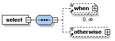
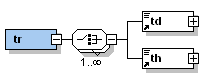
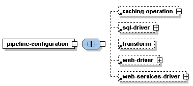
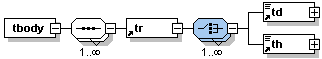

Content model is a term used to describe the set of elements and attributes contained inside another XML element. Although the XML Schema specification is explicit about how schemas should be presented in XML, there is no commonly agreed-upon format for symbols representing information in schema diagrams. Schema editors and viewers have different approaches to diagramming. For the examples in MCS documentation the diagrams use the following conventions.
The diagrams show the structure and cardinality of the elements used in these structures. Attributes are not shown.
In the first figure, the symbol in the center, with the horizontal dotted line, indicates a sequence. This diagram says the select element consists of the sequence of when and otherwise elements. The boxes with a plus (+) at the right indicates that there is hidden content not shown in the diagram. An arrow at the bottom left of an element indicates that it refers to a declaration elsewhere in the schema. The dotted line around the elements indicates they are optional.

The switchlike symbol in the next figure indicates a choice; in this case, a choice between one or more th or td elements. The solid line around the elements shows that one or other is required.

Another way of providing a choice is to use the following structure. The symbol is for the xs:all element that allows the contained elements to occur in any order, either once only or not at all.

Cardinality expresses constraints about the minimum and maximum occurrences of elements. The number of times it may appear is given by the text below it. In the final figure 1..∞ means the minOccurs attribute has a value of 1 and maxOccurs is unbounded (infinity). If there is no such text, the diagram is showing that it can occur only once.
The diagram shows some additional information. The row of bars at the top left of the td and th elements indicates that only text content is allowed.

Related topics
Web author's guide